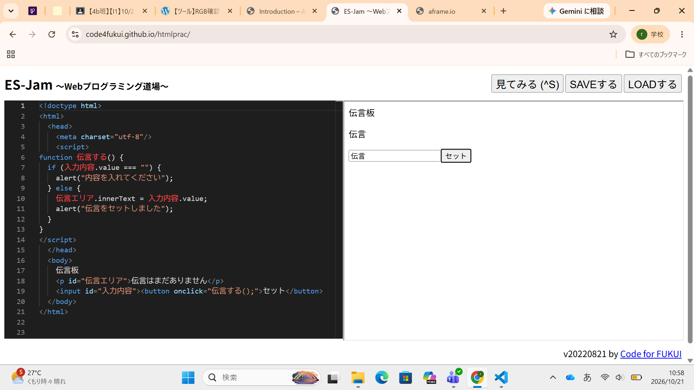

3-2 JavaScript体験：伝言プログラムを作る

伝言板
1.内容
ミニ伝言板アプリの作成を行った。伝言を欄に書きこみ、セットボタンを押すとメッセージが
表示され、伝言が伝言板に表示されるようなプログラムや、欄に何も書かずにセットボタンを
押すと伝言を入力するよう促すメッセージが表示されるようにした。
2.感想
自分が普段使っているアプリもプログラミングコードという文字の集まりでできていると考えると
凄いなと思った。今回作成したような簡単なアプリでも自分にとっては難しかったので、アプリを
開発している方々は凄いんだなと感じた。